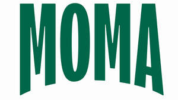

Trade Mark Journal No.2026/006 6 February 2026
UK00004308549 10 December 2025 (29,30,32)
Mark 1
MOMA
Mark 2

- Class 29
- Plant-based milk; non-dairy milk substitutes; artificial milk-based desserts; oat milk; oat-based beverages; oat milk-based beverages containing coffee; rice milk; rice milk-based beverages; soya milk; soya milk-based beverages; coconut milk; coconut milk-based beverages; almond milk; almond milk-based beverages; hemp milk; hemp milk-based beverages; peanut milk; peanut milk-based beverages; preserved, frozen, dried and cooked milk, cheese, butter, yogurt and other milk products; oils and fats for food; yoghurt; flavoured yoghurts; fruit flavoured yoghurts; milk beverages, milk predominating; milk shakes; yogurt drinks; beverages having a milk base; drinks made from dairy products; flavoured milk; low fat yoghurts; milk drinks containing fruits; milk products; preparations for making yoghurt; artificial cream (dairy product substitutes); coffee creamer.
- Class 30
- Coffee, tea, cocoa and substitutes therefor; flour and preparations made from cereals; bread, pastries and confectionery; chocolate; ice cream, sorbets and other edible ices; sugar, honey, treacle; processed oats; porridge oats; porridge; muesli; cereal bars and energy bars; biscuits; snacks manufactured from muesli; snack foods made of whole wheat; snack foods made from wheat; food preparations based on grains; processed cereals for food for human consumption; oat biscuits for human consumption; oat cakes for human consumption; cereal-based snack food; crackers made of prepared cereals; crisps made of cereals; flapjacks; pumpkin porridge (hobak-juk); snack food products consisting of cereal products; snack food products made from cereal flour; snack foods consisting principally of extruded cereals; snack foods made from corn; preparations made from cereals; instant porridge; oats for human consumption; foodstuffs made from oats; coffee based beverages; flavoured coffee; coffee substitutes; iced coffee; gluten-free desserts, namely, dairy substitute ice cream.
- Class 32
- Beers; non-alcoholic beverages; oat-based beverages, other than milk substitutes; rice-based beverages, other than milk substitutes; soya-based beverages, other than milk substitutes; coconut-based beverages; mineral and aerated waters; fruit beverages and fruit juices; syrups and other preparations for making non-alcoholic beverages; smoothies; smoothies containing grains; smoothies containing oats.
MOMA Foods Ltd.
Representative: HGF Limited